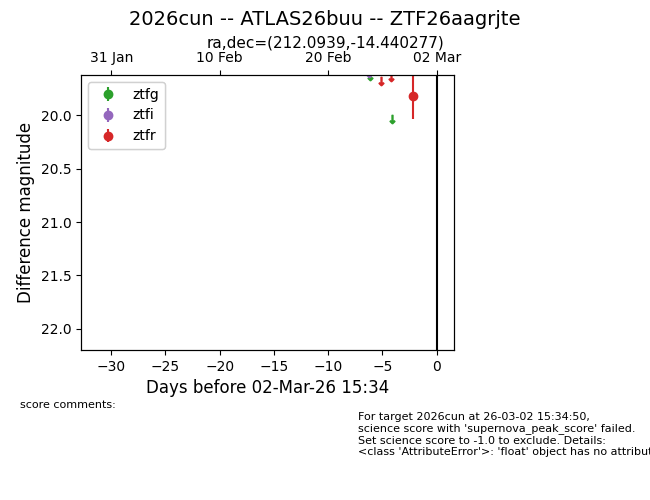
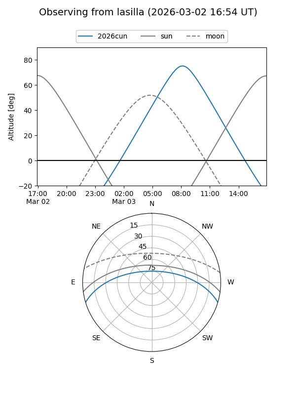
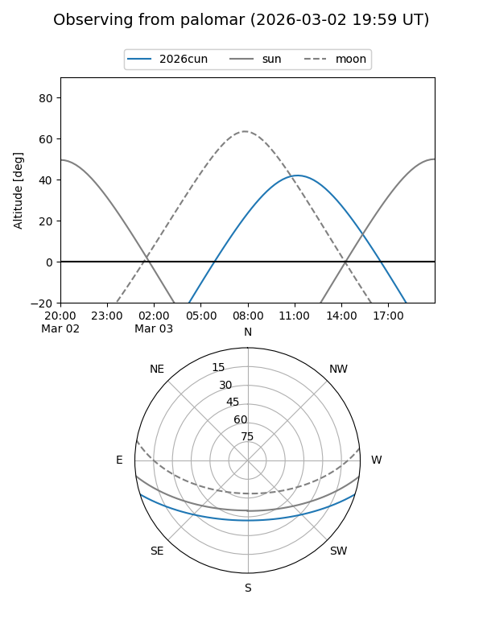

2026cun
Target 2026cun at 2026-03-02 15:39
Aliases and brokers:
FINK: link
Lasair: link
ALeRCE: link
TNS: link
YSE: link
alt names
ZTF26aagrjte (ztf,fink_ztf)
2026cun (tns,yse)
ATLAS26buu (atlas)
Coordinates:
equatorial (ra, dec) = 212.0939,-14.44028
equatorial (HMS+DMS) = 14:08:22.53,-14:26:25.00
galactic (l, b) = (329.4678,+44.43118)
Flags:
Photometry:
last ztfr=19.82
1 ztfr detections
Lightcurve

Visibility


Additional plots